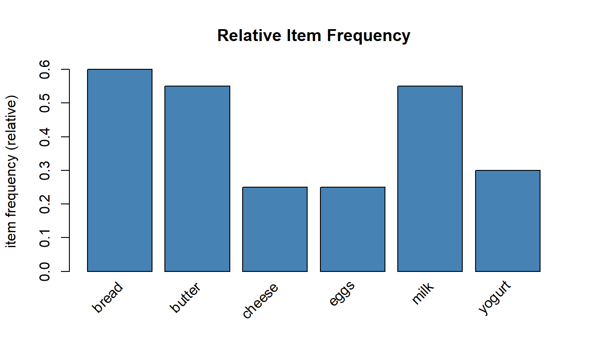
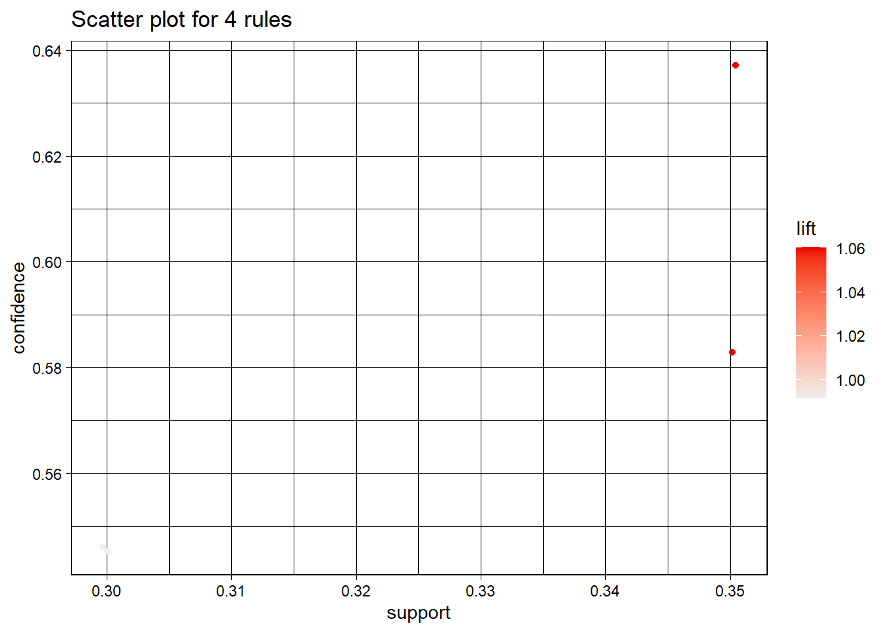
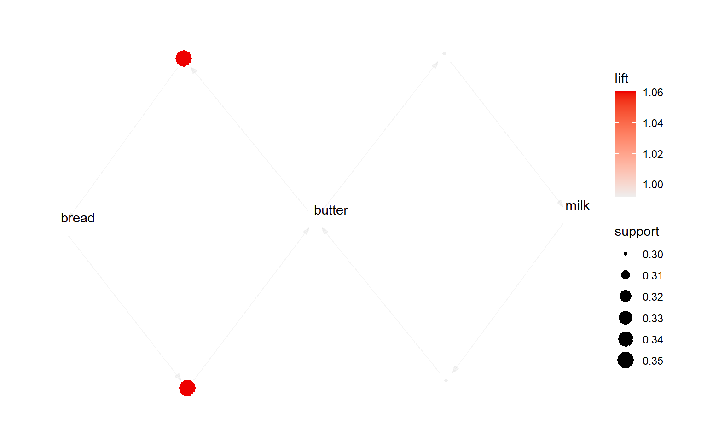

if (!requireNamespace("arules", quietly = TRUE)) install.packages("arules")
if (!requireNamespace("arulesViz", quietly = TRUE)) install.packages("arulesViz")
library(arules)
library(arulesViz)
library(ggplot2)
cat("Ready!\n")Ready!Introduction with R
2026-04-01
“Customers who buy bread and butter also tend to buy milk.”
{bread, butter}→{milk}
Retail
Other Domains
| Measure | Formula | What it tells us |
|---|---|---|
| Support | freq(A ∪ B) / N | How common is the itemset? |
| Confidence | Supp(A ∪ B) / Supp(A) | How reliable is the rule? |
| Lift | Conf(A→B) / Supp(B) | Is it better than chance? |
Rule of Thumb
Lift > 1 → useful rule · Lift = 1 → no association · Lift < 1 → negative association
5 transactions:
| TID | Items |
|---|---|
| T1 | bread, butter, milk |
| T2 | bread, butter |
| T3 | bread, milk |
| T4 | butter, milk |
| T5 | bread, butter, milk |
\[\text{Support}(\{bread, butter\}) = \frac{3}{5} = 0.60\]
Rule: {bread, butter} → {milk}
\[\text{Confidence} = \frac{2/5}{3/5} = \frac{2}{3} \approx 0.67\]
67% of the time when someone buys bread + butter, they also buy milk.
\[\text{Lift} = \frac{\text{Confidence}}{\text{Support(milk)}} = \frac{0.67}{0.80} = 0.83\]
{bread}, {milk}, …Note
The key insight: a subset of a frequent itemset must also be frequent
(the anti-monotone property)
baskets <- list(
c("bread", "butter", "milk"),
c("bread", "butter"),
c("bread", "milk"),
c("butter", "milk"),
c("bread", "butter", "milk"),
c("bread", "eggs"),
c("bread", "butter", "eggs"),
c("milk", "yogurt"),
c("milk", "yogurt", "butter"),
c("bread", "yogurt"),
c("cheese", "bread", "butter"),
c("cheese", "milk"),
c("bread", "butter", "milk", "eggs"),
c("yogurt", "cheese"),
c("bread", "milk", "yogurt"),
c("butter", "eggs"),
c("bread", "cheese"),
c("milk", "butter", "cheese"),
c("bread", "butter", "yogurt"),
c("eggs", "milk")
)
txns <- as(baskets, "transactions")
cat(length(txns), "transactions,", length(itemLabels(txns)), "items\n")20 transactions, 6 items
Apriori
Parameter specification:
confidence minval smax arem aval originalSupport maxtime support minlen
NA 0.1 1 none FALSE TRUE 5 0.2 1
maxlen target ext
10 frequent itemsets TRUE
Algorithmic control:
filter tree heap memopt load sort verbose
0.1 TRUE TRUE FALSE TRUE 2 TRUE
Absolute minimum support count: 4
set item appearances ...[0 item(s)] done [0.00s].
set transactions ...[6 item(s), 20 transaction(s)] done [0.00s].
sorting and recoding items ... [6 item(s)] done [0.00s].
creating transaction tree ... done [0.00s].
checking subsets of size 1 2 3 done [0.00s].
sorting transactions ... done [0.00s].
writing ... [9 set(s)] done [0.00s].
creating S4 object ... done [0.00s].Frequent itemsets: 9 items support count
[1] {bread} 0.60 12
[2] {milk} 0.55 11
[3] {butter} 0.55 11
[4] {bread, butter} 0.35 7
[5] {yogurt} 0.30 6
[6] {butter, milk} 0.30 6
[7] {cheese} 0.25 5
[8] {eggs} 0.25 5 Apriori
Parameter specification:
confidence minval smax arem aval originalSupport maxtime support minlen
0.5 0.1 1 none FALSE TRUE 5 0.2 2
maxlen target ext
10 rules TRUE
Algorithmic control:
filter tree heap memopt load sort verbose
0.1 TRUE TRUE FALSE TRUE 2 TRUE
Absolute minimum support count: 4
set item appearances ...[0 item(s)] done [0.00s].
set transactions ...[6 item(s), 20 transaction(s)] done [0.00s].
sorting and recoding items ... [6 item(s)] done [0.00s].
creating transaction tree ... done [0.00s].
checking subsets of size 1 2 3 done [0.00s].
writing ... [4 rule(s)] done [0.00s].
creating S4 object ... done [0.00s].Rules generated: 4 lhs rhs support confidence coverage lift count
[1] {bread} => {butter} 0.35 0.5833333 0.60 1.0606061 7
[2] {butter} => {bread} 0.35 0.6363636 0.55 1.0606061 7
[3] {milk} => {butter} 0.30 0.5454545 0.55 0.9917355 6
[4] {butter} => {milk} 0.30 0.5454545 0.55 0.9917355 6 
Available control parameters (with default values):
layout = stress
circular = FALSE
ggraphdots = NULL
edges = <environment>
nodes = <environment>
nodetext = <environment>
colors = c("#EE0000FF", "#EEEEEEFF")
engine = ggplot2
max = 100
verbose = FALSE
What items predict buying milk?
Apriori
Parameter specification:
confidence minval smax arem aval originalSupport maxtime support minlen
0.5 0.1 1 none FALSE TRUE 5 0.15 2
maxlen target ext
10 rules TRUE
Algorithmic control:
filter tree heap memopt load sort verbose
0.1 TRUE TRUE FALSE TRUE 2 TRUE
Absolute minimum support count: 3
set item appearances ...[1 item(s)] done [0.00s].
set transactions ...[6 item(s), 20 transaction(s)] done [0.00s].
sorting and recoding items ... [6 item(s)] done [0.00s].
creating transaction tree ... done [0.00s].
checking subsets of size 1 2 3 done [0.00s].
writing ... [2 rule(s)] done [0.00s].
creating S4 object ... done [0.00s].Rules predicting milk: 2 lhs rhs support confidence coverage lift count
[1] {butter} => {milk} 0.30 0.5454545 0.55 0.9917355 6
[2] {yogurt} => {milk} 0.15 0.5000000 0.30 0.9090909 3 rules support confidence coverage lift count
3 {butter} => {bread} 0.35 0.636 0.55 1.061 7
4 {bread} => {butter} 0.35 0.583 0.60 1.061 7
1 {milk} => {butter} 0.30 0.545 0.55 0.992 6
2 {butter} => {milk} 0.30 0.545 0.55 0.992 6| Step | What we did |
|---|---|
| 1 | Loaded arules and arulesViz |
| 2 | Built a small transaction dataset |
| 3 | Explored item frequencies |
| 4 | Found frequent itemsets with Apriori |
| 5 | Generated rules (support + confidence filters) |
| 6 | Visualised rules (scatter & graph) |
| 7 | Filtered rules for a specific product |
| 8 | Exported rules to a data frame |
arules + arulesViz make ARM easy in RTry it yourself!
Change supp and conf thresholds and see how the number of rules changes.
arules — A computational environment for mining association rules. Journal of Statistical Software, 14(15).arulesViz: Visualizing Association Rules and Frequent Itemsets. Journal of Statistical Software, 76(2).Association Rule Mining in R